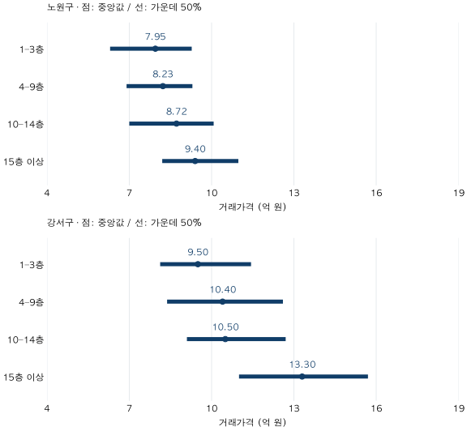

단지 조건 비교 · 절대층과 상대층
아파트 15층은 로열층일까? 층별 실거래가 비교의 기준
노원·강서의 2026년 상반기 84㎡ 실거래를 층별로 비교합니다. 15층과 상대층의 차이, 건물 총층수 연결률과 가격 분포를 확인하고 내 후보의 층 프리미엄으로 적용하기 어려운 이유를 살펴보세요.
분석 기간 · 2026년 1~6월 계약 | 보유 자료 스냅샷 생성 · 2026-10-04
아파트 15층이면 로열층일까요? 15층 건물의 15층은 최상층이고, 30층 건물의 15층은 상대 높이 50%입니다. 층 숫자만으로 같은 위치라고 볼 수 없습니다. 노원·강서의 2026년 상반기 전용84㎡ 이상~85㎡ 미만 실거래를 비교하며, 층별 가격표에서 알 수 있는 것과 추가로 확인할 것을 구분합니다.
‘15층’과 ‘높은 층’은 같은 말인가요?
절대층은 신고된 층 숫자입니다. 상대층은 해당 층÷그 건물의 지상 총층수로 계산합니다. 가상 예시로 두 건물을 생각해 보세요. 15층/15층은 100%이자 최상층, 15층/30층은 50%입니다. 이 비율은 건물 내부 위치의 설명이며 실제 지면 높이, 조망이 트인 정도나 가격 프리미엄을 뜻하지 않습니다.
분모는 같은 단지의 가장 높은 동이 아니라 거래가 발생한 바로 그 동의 총층수여야 합니다. 여러 동의 높이가 다를 수 있습니다. 거래 중 가장 높은 층을 건물 총층수로 대신 쓰면, 거래가 없었던 위층을 놓칠 수 있습니다.
이 글의 가격표는 결과를 보기 전에 정한 1–3층, 4–9층, 10–14층, 15층 이상 네 절대층 구간입니다. 법적 분류나 보편적 로열층 구간이 아닙니다. 특히 1–3층에는 1층의 별도 생활 조건이, 15층 이상에는 중간층과 최상층이 함께 들어갈 수 있습니다.
같은 반기·면적에서 층별 가격은 얼마나 다른가요?
노원·강서는 앞선 가격 비교에서 선택한 두 지역입니다. 격차가 큰 구를 새로 고르지 않았습니다. 기간은 2026년1~6월, 면적은 84≤전용면적<85㎡이며 정확히 같은 평면만 모은 표는 아닙니다. 그림의 점은 중앙값, 선은 하위25%부터 상위25%까지의 가운데50% 구간입니다. 선 밖에도 나머지 절반의 거래가 있습니다.

노원: 1–3층 7.95억, 15층 이상 9.40억 원
| 절대층 | 거래 건수 | 거래 단지 수 | 하위25% | 중앙값 | 상위25% |
|---|---|---|---|---|---|
| 1–3층 | 150 | 77 | 6.30 | 7.95 | 9.28 |
| 4–9층 | 322 | 119 | 6.90 | 8.23 | 9.30 |
| 10–14층 | 203 | 84 | 7.00 | 8.72 | 10.08 |
| 15층 이상 | 127 | 46 | 8.20 | 9.40 | 10.98 |
두 군의 중앙값 차이는 1.45억 원입니다. 하지만 1–3층 가운데50% 구간은 6.30~9.28억 원, 15층 이상은 8.20~10.98억 원으로 겹칩니다. 모든 고층 거래가 모든 저층 거래보다 비싼 것은 아닙니다. 거래 단지 수는 구간마다 중복될 수 있으므로 더해서 전체 단지 수로 쓰지 않습니다.
강서: 15층 이상 59건의 중앙값은 13.30억 원
| 절대층 | 거래 건수 | 거래 단지 수 | 하위25% | 중앙값 | 상위25% |
|---|---|---|---|---|---|
| 1–3층 | 162 | 89 | 8.13 | 9.50 | 11.44 |
| 4–9층 | 303 | 139 | 8.38 | 10.40 | 12.60 |
| 10–14층 | 202 | 93 | 9.10 | 10.50 | 12.70 |
| 15층 이상 | 59 | 30 | 11.00 | 13.30 | 15.70 |
1–3층 중앙값 9.50억 원과 15층 이상 13.30억 원의 차이는 3.80억 원입니다. 4–9층과 10–14층 중앙값은 각각 10.40억, 10.50억 원입니다. 네 구간의 관측 중앙값이 순서대로 높아지는 결과는 확인되지만, 개별 층을 한 층 올릴 때 같은 폭으로 가격이 오른다고 읽을 수는 없습니다.
표는 거래1건에 한 표를 주는 집계입니다. 단지별 비중이 같지 않으며 가격은 소수 셋째 자리에서 반올림해 둘째 자리까지 표시합니다. 좁은 화면에서는 표를 좌우로 움직일 수 있습니다.
총층수까지 확인된 거래는 얼마나 되나요?
국토교통부 상세 자료는 층 정보를 제공하고, 공식 설명상 소유권 이전등기를 마친 건에는 동 정보도 추가 공개합니다. 따라서 층이 있다고 동까지 항상 확인되는 것은 아닙니다. 동을 알아도 현재 건축물대장과 하나의 건물로 연결되는지 별도로 검사해야 합니다.
| 지역 | 대상 거래 | 층 무효 제외 | 총층수 연결 | 연결 미충족 | 거래 기준 연결률 |
|---|---|---|---|---|---|
| 노원구 | 802 | 0 | 662 | 140 | 82.5% |
| 강서구 | 726 | 0 | 606 | 120 | 83.5% |
층 자체의 누락·비양수·비정수로 제외된 거래는 두 구 모두 0건입니다. 반면 총층수 연결 조건을 만족한 거래는 노원 662/802건, 강서 606/726건입니다. 나머지 140건·120건은 가격표에 그대로 들어가지만, 검증된 상대층으로 바꾸지 않았습니다. 이 연결률은 주택 재고나 단지 수 기준 비율이 아닙니다.
동 정보 누락, 동명 불일치, 공동 필지나 여러 후보 건물, 준공연도 충돌 등은 서로 다른 실패 사유입니다. 모두 ‘총층수 없음’으로 단정할 수 없습니다. 연결에 성공해도 현재 대장을 쓴 결과이며 계약 당시 건물 상태의 완전한 복원이 아닙니다. 연결률이 높다는 것만으로 남은 표본의 대표성이나 가격 통제가 확보되지도 않습니다.
높은 층이 비싸다는 근거로는 충분하지 않나요?
가장 강한 반론은 “같은 구·기간·면적에서 두 지역 모두 고층군이 더 비싸니 층의 장점이 가격에 반영된 것 아닌가”입니다. 그 가능성과 부합하는 관측 차이라는 해석은 가능합니다. 다만 높은 건물이 있는 동네·연식·규모와 낮은 건물의 구성이 다르고, 같은 단지 안에서도 동·향·수리·조망·계약월이 다릅니다. 이번 집계는 그중 층만의 가격을 분리하지 않았습니다.
층의 조건부 차이에 더 가까이 가려면 최소한 같은 단지·같은 건물·정확한 전용면적·가까운 계약 시점을 맞추고, 총층수 대비 위치와 1층·최상층을 구분해야 합니다. 비교 가능한 층 상태가 둘 이상 있어야 하고 표본 수·단지 쏠림·불확실성도 봐야 합니다. 그렇게 좁혀도 같은 호수의 반복거래가 아니므로 향·상태 차이는 남을 수 있습니다.
따라서 이번 글은 로열층을 몇 층 또는 몇 퍼센트로 지정하지 않습니다. 15층 이상 중앙값 13.30억 원을 내 후보의 적정가격으로 쓰거나, 두 군 차액 3.80억 원을 같은 동 저층에서 고층으로 바꾸는 비용으로 적용하지 않습니다. 최상층의 조망·옥상 관련 관리 상태, 저층의 접근성과 사생활 등은 현장 확인 항목이며 이 표가 측정한 장단점이 아닙니다.
층이 다른 두 후보를 비교하는 순서
- 동과 총층수를 함께 적습니다. ‘15층’만 적지 말고 어느 동의 15/15층인지, 15/30층인지 확인합니다. 모르면 미확인으로 남깁니다.
- 가격 사례의 조건을 맞춥니다. 같은 동·정확한 전용면적·가까운 계약 시점의 근거부터 찾고, 연식·규모·입지 차이가 섞인 구 평균은 참고 범위로 둡니다.
- 실물 차이를 따로 기록합니다. 향, 앞동 간섭, 실제 조망, 내부 수리와 소음 등 확인한 사실과 아직 모르는 항목을 구분합니다.
- 추가 지불액은 실제 후보끼리 계산합니다. 같은 가격 종류와 날짜를 쓰고 남은 조건 차이를 적습니다. 이 글의 집계 차액으로 매물 가격을 보정하지 않습니다.
자료·총층수 연결·공개 기준·검증 방법 펼치기
- 원천과 범위:국토교통부 아파트 매매 상세 자료의 자체 정제 관측 거래, 현재 보유한 건축물대장 표제부입니다. 노원·강서의2026년1~6월,84≤전용면적<85㎡,기존 가격 비교 적격 매매에서 토지임대부 제외. 국토부 공식 층별 통계나 현재 매물 가격이 아닙니다.
- 연결 규칙:단지 식별키와 보수적으로 정리한 동명을 사용합니다. 정확한 일반토지 필지의 주거 주건물, 양의 세대수, 유일한 후보 건물, 유효한 양의 정수 총층수를 요구합니다. 공동 필지의 복수 단지와 동명 충돌을 제외하며, 사용승인연도와 기준 건축연도 차이2년 이내·승인 후 계약·층이 총층수 이하인지 확인합니다. 임의 동번호 추정이나 단지 최대층 대체는 하지 않습니다. 일부만 수집된 대장은 누락 동 추정에 쓰지 않습니다.
- 집계:사전 고정한 절대층 네 구간의 선형25·50·75분위수. 가격 공개40건·2단지 이상 기준을8칸 모두 통과했습니다. 건수는10건 기준과 잔여 셀을 검사하며 단지수10미만은 구간으로 처리합니다. 총층수 연결 성공 여부로 가격 표본을 다시 고르지 않습니다. 연결률은 상대층 모형의 추정 지원율이 아닙니다.
- 대조:관측 테이블SQL과 별도 사실 테이블·단지 마스터Python 계산의 구간·건수·단지수·분위수를 대조했습니다. 이전 동별 글의802/726건,원천12개 월별 파일 존재,마스터 유일성,거래 중복 없음과 총층수 연결 전후 건수 보존도 확인했습니다. 두 가격 계산은 같은 정제 원천을 사용하며 건물 연결 자체를 독립 재수집한 검증은 아닙니다.
- 시점:거래 스냅샷 생성2026-10-04,수록 기준 끝월2026-09. 정보 도착 컷오프는 미상입니다.6월 종료는 이전 글과 맞춘 회고 기준으로,6월 말 알 수 있던 정보만의 분석이 아닙니다. 공개 집계JSON에는 개별 거래·건물/단지 식별자·모형 계수가 없습니다.
계산·분석·집필:파파펭귄 (Nobot Kang). 에이전트로 집계 대조·계산·초안 검토를 보조했습니다. 공식 출처 확인일:2026-10-10.